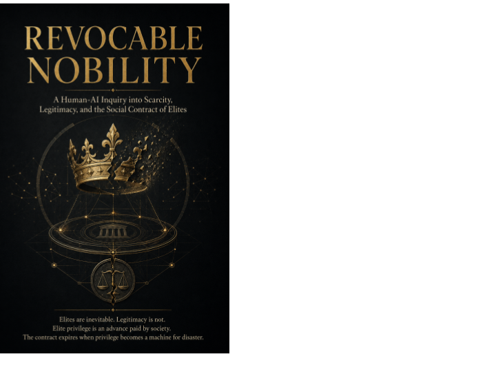

Political philosophy · Axiologic Research Editions
Revocable Nobility
A Human-AI Inquiry into Scarcity, Legitimacy, and the Social Contract of Elites
Every complex society has an upstairs. The dangerous moment comes when the stairs disappear.
Name the elite, then bind it
Revocable Nobility is explicitly not anti-elite. Its starting claim is that complex societies inevitably concentrate knowledge, reputation, resources and decision-making power. Denying that fact does not abolish hierarchy; it hides it behind friendlier words, leadership, merit, expertise, administration. The book’s wager is that honest naming permits an honest bargain.
“Nobility” here is neither hereditary sovereignty nor an invitation to nostalgia. It means a temporary, domain-specific status attached to demanding service and greater accountability. Privilege is treated as an advance paid by society, not proof of intrinsic worth. When service ends and correction is treated as treason, the contract expires; the historical alternatives are often violent replacement or an extractive caste insulated by procedural language.
The bargain beneath the title
Can unequal status be legitimate? Only if authority is bounded, its service record inspectable, and people who bear its costs remain inside moral accounting.
Why not abolish elites? The book reads revolutionary destruction as a warning: it can remove old hierarchies while rapidly producing more coercive successors. Peaceful circulation is a better achievement.
What could revocability look like? The proposal imagines status that can be earned, challenged, lost and later regained, without making removal a purge or office a private possession.
A legitimate hierarchy must be useful enough to honour and revocable enough not to require catastrophe.
Before the contract expires
The book asks difficult readers on every side to give up an easy story. Meritocracy can conceal inherited preparation and control of the criteria; equality can hide administrative aristocracy; populist revenge can recreate domination. AI-generated theoretical models and simulations appear as instruments for surfacing counterexamples about scarcity, surveillance, envy and elite selection, not as proof machines. This makes the work especially relevant to institutions facing automation and concentrated informational power.